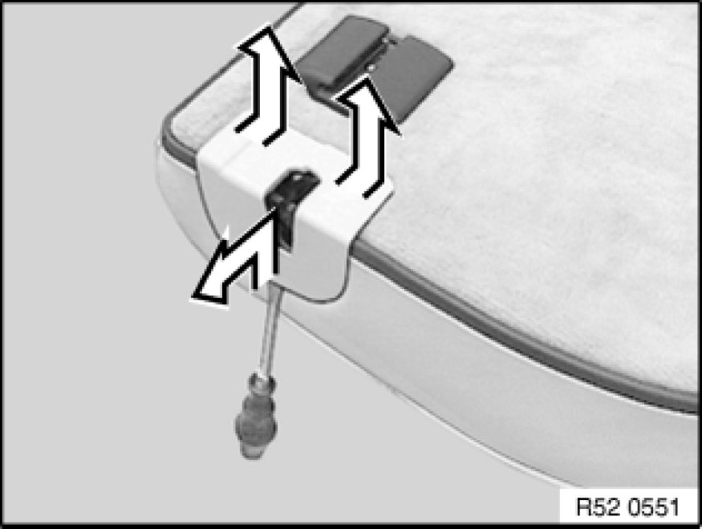
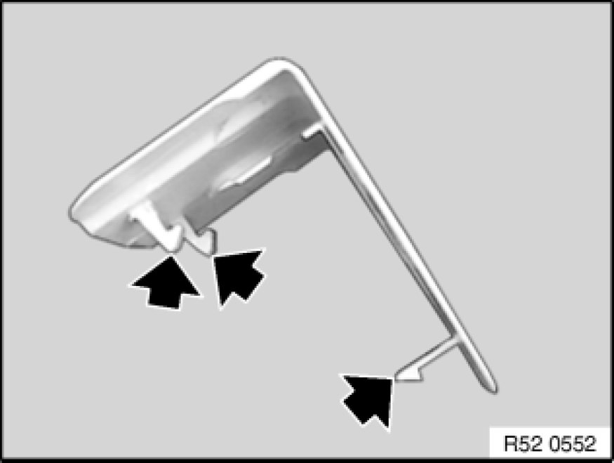
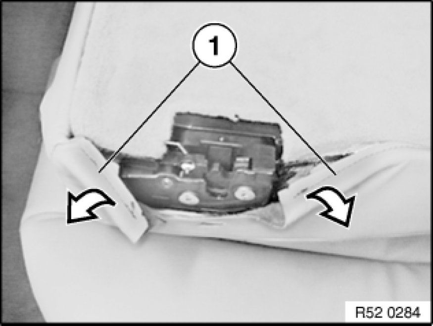
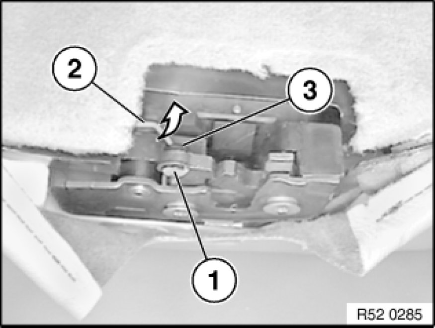
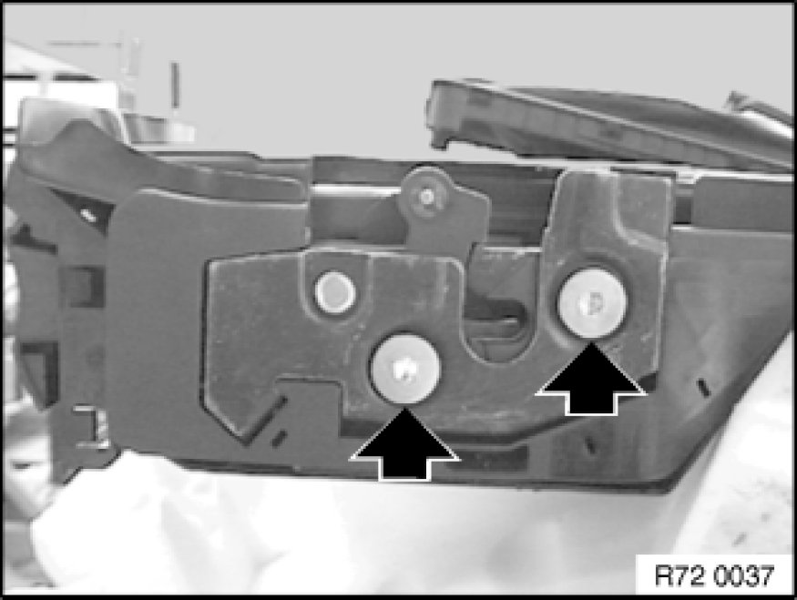
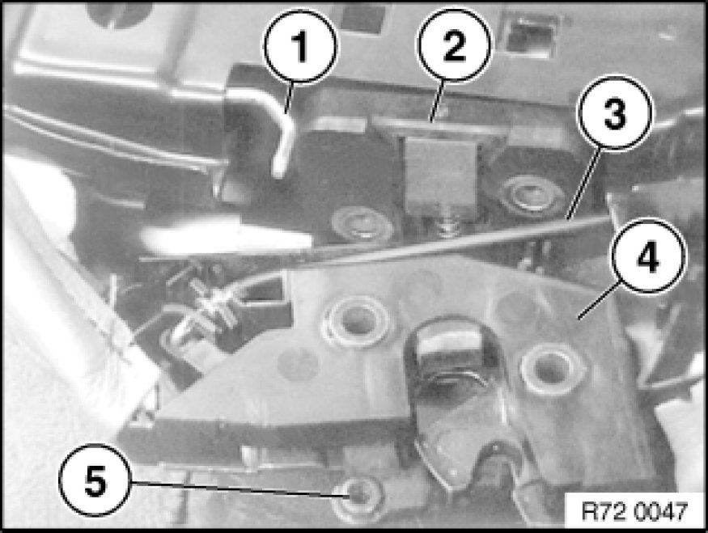
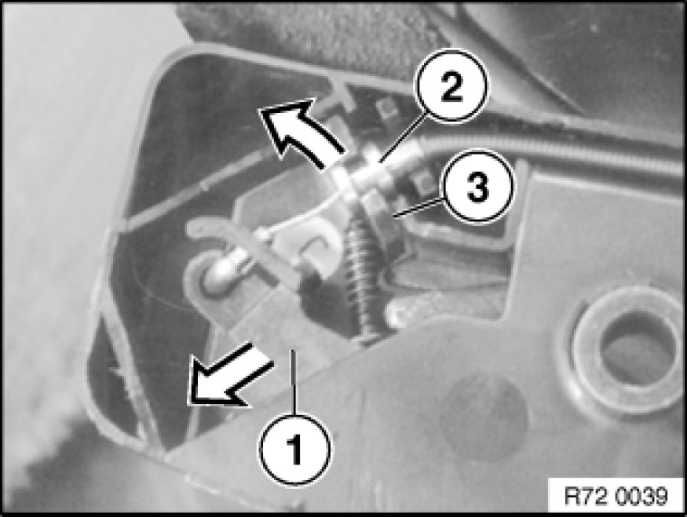
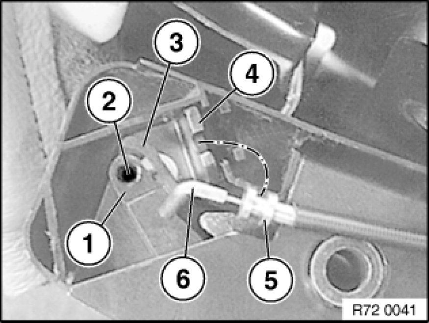

Removing and Installing/Replacing Lock for Left Rear Seat Backrest (Through-Loading System)
52 26 309 - Removing and installing/replacing lock for left rear seat backrest (through-loading system)

Slide lock trim on edge of backrest side upwards slightly and clip out to one side, then slide trim section on rear side slightly to center, unclip and remove.

Installation:
Clips of trim must not be damaged.

Partially lift cover (1) off rear seat backrest.

E46 only:
Remove lockplate (1) and unhook actuating rod (2) for seatback release.
E83 only:
Lockplate (1) omitted. Unhook actuating rod (2) for seatback release.
Installation:
Fit bush (3) and new lockplate (1).
Perform function check with rear seat
back-rest folded forward.

Release screws and fold back backrest lock.

Summary, backrest lock, left:
1. Actuating rod for backrest lock
2. Lower section, backrest lock, left
3. Bowden cable of safety belt
4. Backrest lock, left
5. Bush for mounting of actuating rod
backrest locking fixture

Unhooking seat belt Bowden cable from backrest lock:
Press lever (1) forwards in direction of arrow.
Remove sleeve for Bowden cable (2) from holder (3) in backrest lock.
Unhook Bowden cable from lever (1).

Summary, backrest lock, left:
1. Actuating lever for backrest lock in left backrest lock
2. Hole for Bowden cable of safety belt
3. Retaining lug for Bowden cable on actuating lever for backrest lock
4. Bracket for Bowden cable of safety belt
5. Bowden cable sleeve
6. Bowden cable of safety belt